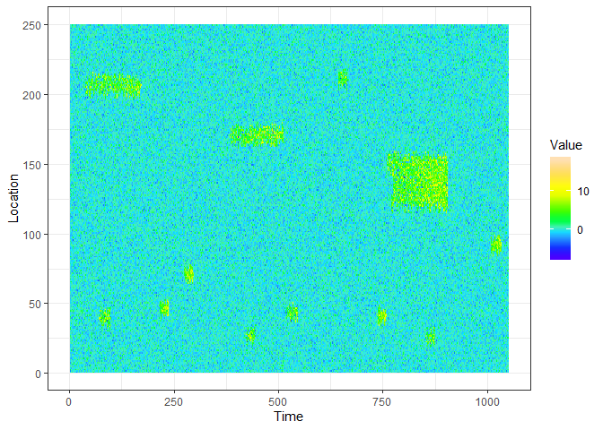
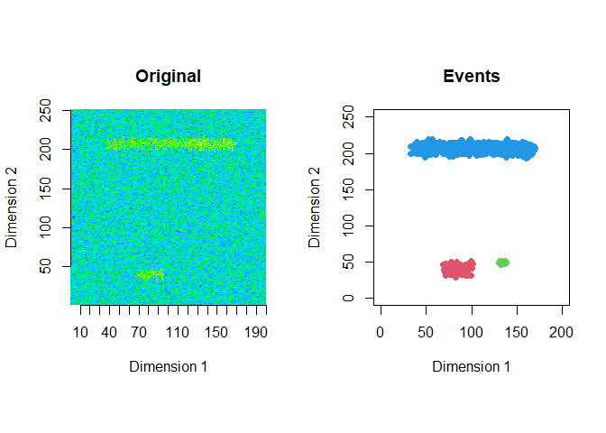
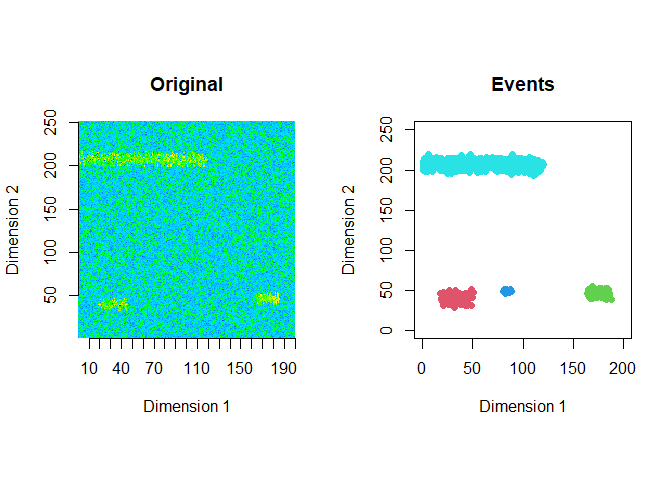
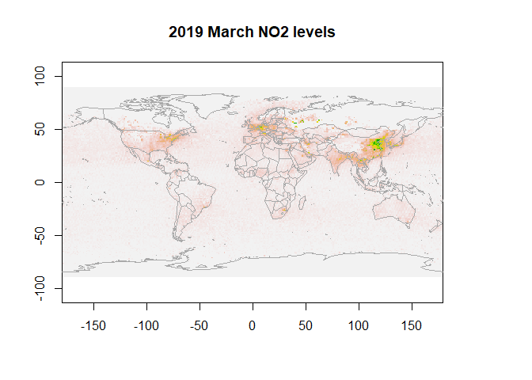
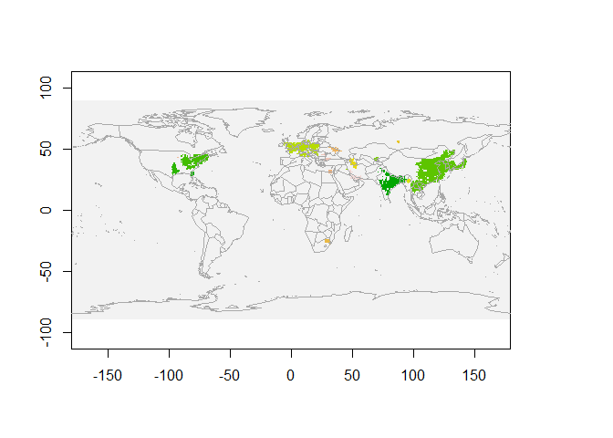

The goal of eventstream is to extract and classify events in contiguous spatio-temporal data streams of 2 or 3 dimensions. For details see (Kandanaarachchi, Hyndman, and Smith-Miles 2018).
Installation
You can install the development version of eventstream from github with:
#install.packages("devtools")
devtools::install_github("sevvandi/eventstream")Generate data - 2D
This is an example of a data stream you can generate with eventstream.
library("eventstream")
library("AtmRay")
library("ggplot2")
library("raster")
#> Loading required package: sp
library("maps")
str <- gen_stream(3, sd=1)
zz <- str$data
dat <- as.data.frame(t(zz))
dat.x <- 1:dim(dat)[2]
dat.y <- 1:dim(dat)[1]
mesh.xy <- AtmRay::meshgrid(dat.x,dat.y)
xyz.dat <- cbind(as.vector(mesh.xy$x), as.vector(mesh.xy$y), as.vector(as.matrix(dat)) )
xyz.dat <- as.data.frame(xyz.dat)
colnames(xyz.dat) <- c("Time", "Location", "Value")
ggplot(xyz.dat, aes(Time, Location)) + geom_raster(aes(fill=Value)) + scale_fill_gradientn(colours=topo.colors(12)) + theme_bw()
Extract events - 2D
The extracted events are plotted for the first 2 windows using a window size of 200 and a step size of 50.
zz2 <- zz[1:250,]
ftrs <- extract_event_ftrs(zz2, rolling=FALSE, win_size=200, step_size = 50, vis=TRUE)
Extract events - 3D
To extract 3D events we use the NO2 data from NASA’s NEO website.
data(NO2_2019)
dim(NO2_2019)
#> [1] 4 179 360
ftrs_2019 <- extract_event_ftrs(NO2_2019, thres=0.97, epsilon = 2, miniPts = 20, win_size=4, step_size=1, rolling=TRUE, tt=1, vis=FALSE)
dim(ftrs_2019)
#> [1] 17 17 4
ftrs_2019[1, , ]
#> [,1] [,2] [,3] [,4]
#> cluster_id 2.0000000 2.0000000 2.0000000 2.0000000
#> pixels 38.0000000 76.0000000 99.0000000 110.0000000
#> length 1.0000000 2.0000000 3.0000000 4.0000000
#> width 10.0000000 11.0000000 11.0000000 11.0000000
#> height 7.0000000 8.0000000 8.0000000 8.0000000
#> total_value 7441.0000000 14168.0000000 18070.0000000 19973.0000000
#> l2w_ratio 0.1000000 0.1818182 0.2727273 0.3636364
#> centroid_x 1.0000000 1.5000000 1.8484848 2.0636364
#> centroid_y 57.0263158 56.7763158 56.8080808 56.8636364
#> centroid_z 84.3684211 84.4342105 84.5555556 84.5909091
#> mean 195.8157895 186.4210526 182.5252525 181.5727273
#> std_dev 52.8029766 43.4561122 39.9692084 39.0289140
#> slope 0.0000000 -18.7894737 -13.0818078 -7.5821510
#> quad1 0.0000000 0.0000000 -18.5004700 -16.9542051
#> quad2 0.0000000 0.0000000 4.6602897 11.0686499
#> sd_from_global_mean 0.8868751 0.8927779 0.8927779 0.8927779
#> Class 0.0000000 0.0000000 0.0000000 0.0000000The features contain 17 events, 17 features, and 4 age brackets for the events.
First, let us visualize NO2 data for March 2019.
data(NO2_2019)
r <- raster(NO2_2019[1, ,],xmn=-179.5,xmx=179.5,ymn=-89.5,ymx=89.5,crs="+proj=longlat +datum=WGS84")
plot(r, legend=F, main="2019 March NO2 levels")
map("world",add=T, fill=FALSE, col="darkgrey")
Visualize 2D cross sections of 3D events
Next we extract 3D events from March - June 2019. Then we visualize 2D cross sections of these 3D events for March 2019.
data(NO2_2019)
output <- get_clusters_3d(NO2_2019, thres=0.97, epsilon = 2, miniPts = 20, vis=FALSE)
cluster.all <- output$clusters
xyz.high <- output$data
all_no2_clusters_march <- xyz.high[xyz.high[,1]==1,-1]
all_cluster_ids_march <- cluster.all$cluster[xyz.high[,1]==1]
cluster_ids_march <- all_cluster_ids_march[all_cluster_ids_march!=0]
no2_clusters_march <- all_no2_clusters_march[all_cluster_ids_march!=0,]
march_map <- matrix(0, nrow=180, ncol=360)
set.seed(123)
new_ids <- sample( length(unique(cluster_ids_march)),length(unique(cluster_ids_march)) )
new_cluster_ids <- cluster_ids_march
for(i in 1:length(unique(cluster_ids_march)) ) {
new_cluster_ids[ cluster_ids_march== unique(cluster_ids_march)[i]] <- new_ids[i]
}
march_map[no2_clusters_march[,1:2]] <- new_cluster_ids
r <- raster(march_map,xmn=-179.5,xmx=179.5,ymn=-89.5,ymx=89.5,crs="+proj=longlat +datum=WGS84")
plot(r, legend=F)
map("world",add=T, fill=FALSE, col="darkgrey")
We see NO2 clusters extracted for March 2019 in the above figure. Each colour represents a single cluster.
References
Kandanaarachchi, Sevvandi, Rob J Hyndman, and Kate Smith-Miles. 2018. “Early Classification of Spatio-Temporal Events Using Partial Information.” Working Paper 25/18. Department of Econometrics; Business Statistics, Monash University. https://www.researchgate.net/publication/329773142_Early_classification_of_spatio-temporal_events_using_partial_information.